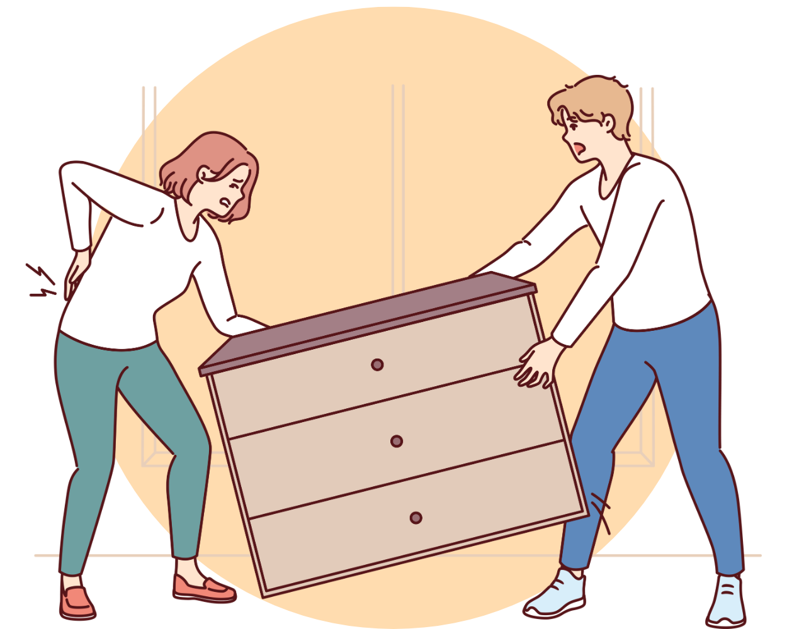

Tunga lyft
Belastningsergonomi handlar om att minska risken för skador vid manuell hantering, som att lyfta, bära, skjuta eller dra. Dessa moment kräver kraft, och om den blir för stor för muskler, senor eller leder kan skador uppstå, särskilt i ländrygg, skuldror och axlar.
För att undvika skador:
- Minska tung manuell hantering så långt som möjligt genom att använda arbetsutrustning eller förbättra arbetsorganisationen.
- Vid tunga lyft är ländryggen särskilt utsatt, och risken för skador ökar om lyften sker med böjda eller vridna arbetsställningar. Lyft över 25 kg bör undvikas.
- Om arbetet kräver många lyft eller svår positionering, hantera inte bördor över 15 kg.
